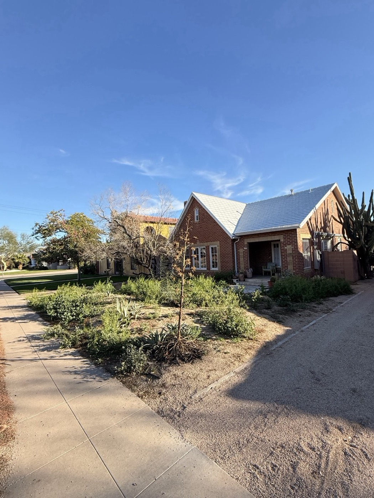

Desert-Adapted Design
Plant palettes built around desert natives and low-water ornamentals — saguaros, palo verdes, ocotillo, agave, and carefully selected accent species. Designed to thrive at Troon's elevation and heat profile.


Desert-aware luxury landscape design for the high Sonoran country around Pinnacle Peak. Estate planning, travertine hardscape, resort backyards, and Discreet Mode quiet maintenance — built with respect for the environment that drew you here.
Troon North sits at roughly 2,500 feet, spread across the foothills between Pinnacle Peak and the McDowell Mountains. It is one of the most environmentally sensitive luxury communities in the Valley — low-density, dark-sky conscious, and built around preserved desert wash corridors and saguaro-studded ridges.
Landscape here is not about overlaying a lawn-centric design language. It is about reading the site, respecting the desert that was already there, and building outdoor space that heightens the property's natural setting rather than fighting it. That is the brief we have been working to in Troon for over a decade.
Plant palettes built around desert natives and low-water ornamentals — saguaros, palo verdes, ocotillo, agave, and carefully selected accent species. Designed to thrive at Troon's elevation and heat profile.
Travertine, paver, and natural stone patios, pool decks, and walkways. Material palettes selected to harmonize with the warm rock of Pinnacle Peak and the desert surround.
Pool-deck builds, ramadas, outdoor kitchens, fire features, and putting greens. Designed to frame the desert view rather than block it.
Drip-focused systems for desert plantings, weather-responsive controllers, and seasonal scheduling tuned to Troon's elevation — where mornings run cooler and afternoons run drier than in the central Valley.
Low-voltage lighting specified to dark-sky guidelines — downward-aimed, warm-temperature, minimal spill. Accents specimen plants and architectural features without washing out the night sky.
Weekly or bi-weekly stewardship from the same crew, same day. Desert pruning done by hand, irrigation checked monthly, and native plantings cared for with an eye toward long-term health rather than cosmetic shortcuts.
One of the reasons people move to Troon is the quiet. Loud gas crews with blowers and trimmers turning up at 6:30 AM undoes that in a single morning. That is why we built Discreet Mode — our signature quiet-service tier.
Discreet Mode is available for all weekly maintenance clients in Troon North and the wider North Scottsdale area.
Troon projects start with a patient on-site walk-through. We pay attention to what the desert is already doing well on the lot — mature specimens, natural wash lines, long views — and build around them rather than erasing them. From there we produce a written scope and a phased plan so the property stays usable through construction.
One foreman. One point of contact. A single pass at finish. When the build is complete, our maintenance crew takes over to the same standard. The company that designed the landscape is the one keeping it right.
Nature Formed installed new landscaping for me three years ago and did a beautiful job. Since then, they've become my go-to team — handling everything from regular maintenance to a full backyard remodel.
I've used Nature Formed and the team for nearly 10 years. Always been reliable, honest, and capable.
On time, very detailed, courteous and professional.